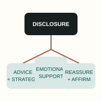
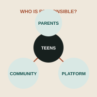
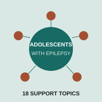
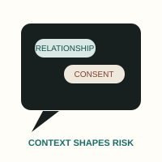

@inproceedings{namvarpour2026overreliance,
title={Understanding Teen Overreliance on AI Companion Chatbots Through Self-Reported Reddit Narratives},
author={Namvarpour, Mohammad and Brofsky, Brandon and Medina, Jessica Y. and Akter, Mamtaj and Razi, Afsaneh},
booktitle={Proceedings of the 2026 CHI Conference on Human Factors in Computing Systems},
year={2026}, doi={10.1145/3772318.3790597}
}

CUI 2026 · Full paper
“You Need to Drop the App”: Online Community Responses to Teens’ Disclosures of Overreliance on AI Companion Chatbots
Mohammad (Matt) Namvarpour, Ananya Mhetras, Jessica Y. Medina, Mamtaj Akter, Afsaneh Razi
Proceedings of the 8th ACM Conference on Conversational User Interfaces · pp. 1–16
Studies how online communities provide informational and emotional support when teens disclose problematic reliance on AI companions.
@inproceedings{namvarpour2026drop,
title={“You Need to Drop the App”: Online Community Responses to Teens’ Disclosures of Overreliance on AI Companion Chatbots},
author={Namvarpour, Mohammad and Mhetras, Ananya and Medina, Jessica Y. and Akter, Mamtaj and Razi, Afsaneh},
booktitle={Proceedings of the 8th ACM Conference on Conversational User Interfaces},
year={2026}, doi={10.1145/3816046.3816214}
}

CUI 2026 · Short paper
Who is Responsible for Teens’ AI Companion Overreliance? Reddit Community Responses to Disclosures of Teens’ Overreliance on Character.AI
Mohammad (Matt) Namvarpour, Ananya Mhetras, Jessica Y. Medina, Mamtaj Akter, Afsaneh Razi
Proceedings of the 8th ACM Conference on Conversational User Interfaces · pp. 1–6
Examines how commenters assign responsibility among teens, parents, and platforms while discussing safeguards and autonomy.
@inproceedings{namvarpour2026responsible,
title={Who is Responsible for Teens’ AI Companion Overreliance?},
author={Namvarpour, Mohammad and Mhetras, Ananya and Medina, Jessica Y. and Akter, Mamtaj and Razi, Afsaneh},
booktitle={Proceedings of the 8th ACM Conference on Conversational User Interfaces},
year={2026}, doi={10.1145/3816046.3816287}
}
2024

CSCW 2024 · Companion publication
Exploring Online Support Needs of Adolescents Living with Epilepsy
Jessica Y. Medina, Jordyn Young, Wendy Trueblood Miller, Afsaneh Razi
Companion Publication of the 2024 Conference on Computer-Supported Cooperative Work and Social Computing · pp. 558–564
Identifies topics on which adolescents living with epilepsy seek online support and implications for supportive technology design.
@inproceedings{medina2024epilepsy,
title={Exploring Online Support Needs of Adolescents Living with Epilepsy},
author={Medina, Jessica Y. and Young, Jordyn and Miller, Wendy Trueblood and Razi, Afsaneh},
booktitle={Companion Publication of the 2024 Conference on Computer-Supported Cooperative Work and Social Computing},
year={2024}, doi={10.1145/3678884.3681906}
}
2022

CSCW 2022 · Companion publication
From Ignoring Strangers’ Solicitations to Mutual Sexting with Friends: Understanding Youth’s Online Sexual Risks in Instagram Private Conversations
Prema Dev, Jessica Y. Medina, Zainab Agha, Munmun De Choudhury, Afsaneh Razi, Pamela J. Wisniewski
Companion Publication of the 2022 Conference on Computer Supported Cooperative Work and Social Computing · pp. 94–97
Investigates how youth experience and navigate online sexual risks within private Instagram conversations.
@inproceedings{dev2022sexualrisks,
title={From Ignoring Strangers’ Solicitations to Mutual Sexting with Friends},
author={Dev, Prema and Medina, Jessica and Agha, Zainab and De Choudhury, Munmun and Razi, Afsaneh and Wisniewski, Pamela J.},
booktitle={Companion Publication of the 2022 Conference on Computer Supported Cooperative Work and Social Computing},
year={2022}, doi={10.1145/3500868.3559469}
}